Hong Kong Market is a grocery store that will whisk you away to the wet markets of Hong Kong, to the convenience stores of Japan, to experience the storefronts of Thailand, and much, much more! Here, we welcome the city of Columbia, Missouri, to Asia.
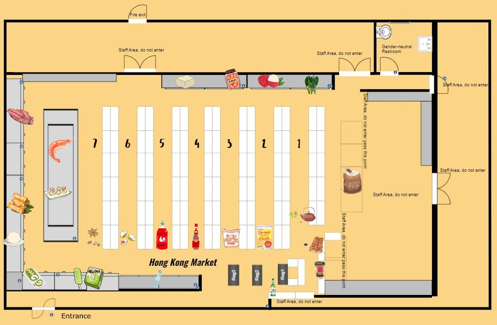
Click on any area in the map above to learn about the products that are found there. Or, click any images below to jump to its area description.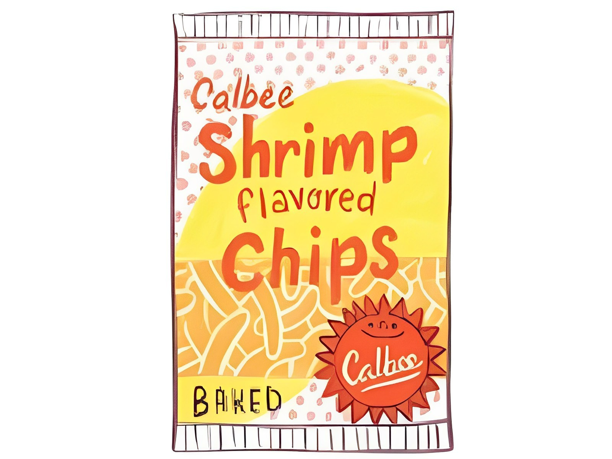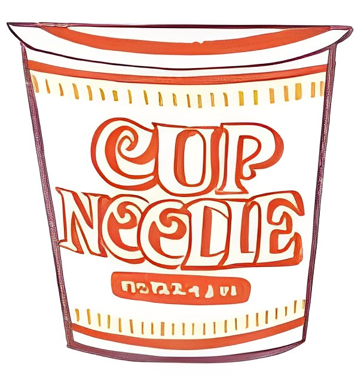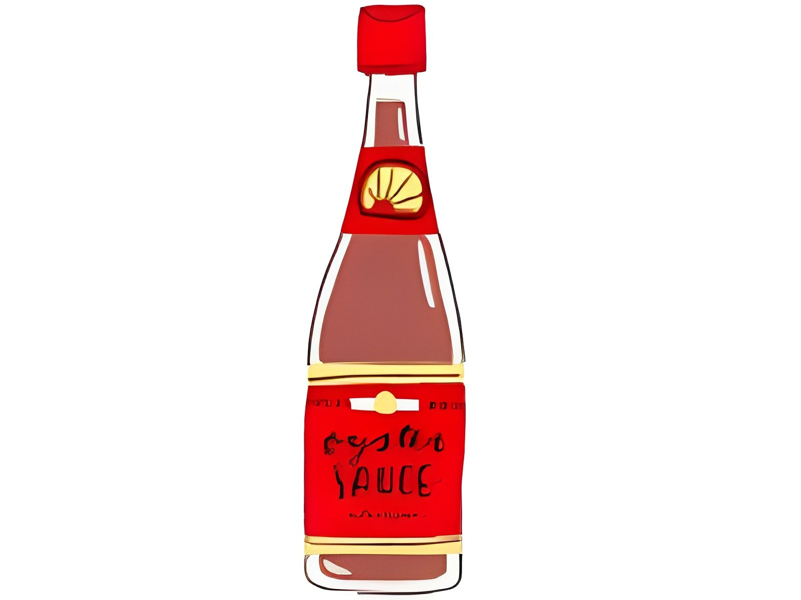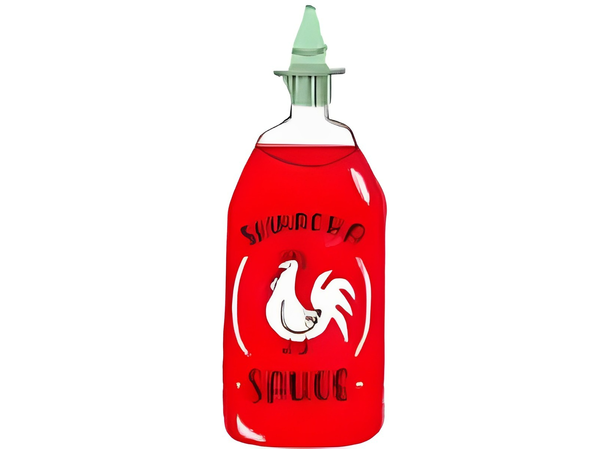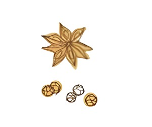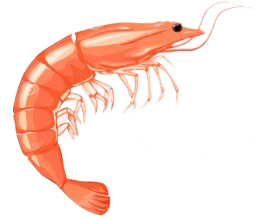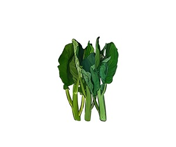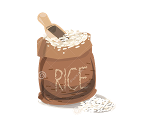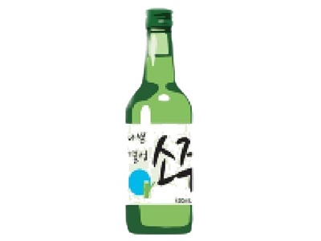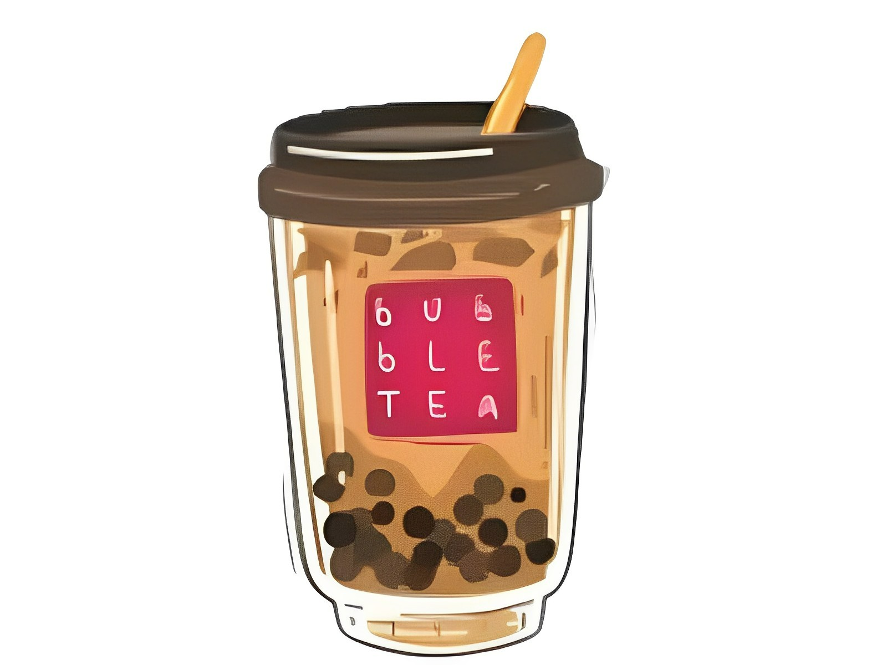
Aisle 1
Miscellaneous & Pickled goods
To your right are tea, coffee, and canned fruits for all your drink-making needs. To your left are pickled, brined, and canned savory goods. Explore more
To your right are cookies, chips, and puff pastries. To your left are candy, mochi, and seaweed snacks. *Note: Since we have a constant influx of new snack items, snack placements are subject to change. Explore more
To your right, are instant noodles both in package or bowl form. If you'd like to buy in bulk, check out the shelves next to our Specials. To your left are dried noodles, vermilli, rice noodles and much more for all your noodle recipes! Explore more
To your right are dried red bean, soy beans, dried pork rinds. To your left are dried mushrooms, dried seaweeds, thousand-year-old eggs, and pre-packaged hotpots. Explore more
In our leftmost wall freezers (starting from lower to upper) are breakfast buns and mantous, vegetarian products, spring rolls, glutinous rice balls, and frozen meat. Explore more
In our island freezer, to your right are frozen dumplings, wantons, and other frozen processed meats. To your left are frozen fish, prawns, squid, and other seafood items. Explore more
This is our Nonfood products & Rice aisle. To your right are pallets stacked with different varieties of rice from an assortment of famous asian brands. To your left are cookware, silverware, fine china. Explore more
On our displays, you can find featured china sets and anime-related memorabilia as well as Asian art decors. Additionally we have a shelf stocked with Asian alcohol. Explore more
Check out our Specials table for baked-duck and pastries freshly arrived hot and fresh from St.Louis on Friday afternoon at around ~4:30pm or 5:00pm. Next to our special table are ingredients for boba tea, then instant ramen brands in bulk boxes. Explore more